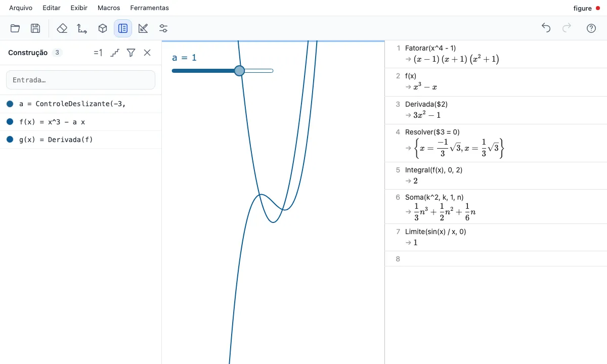

O cálculo simbólico
O DocGeo calcula valores exatos com o Giac, o motor de cálculo simbólico do Xcas: derivadas, primitivas, fatorações, equações, limites, somas, nas fórmulas da figura como numa vista de cálculo simbólico. Também encontra a equação de um lugar geométrico e prova propriedades geométricas.

O Giac é carregado na primeira vez que um cálculo precisa dele, nunca para uma figura que não precisa. As últimas respostas são gravadas na figura: ela abre e é exibida sem esperar o Giac, mesmo offline. Se o Giac não puder ser carregado, “⚠ Giac” aparece no canto inferior esquerdo: as respostas já conhecidas continuam exibidas, as outras ficam indefinidas.
Os comandos de cálculo simbólico
Usam-se em qualquer fórmula, como uma função. Uma expressão cuja fórmula é apenas um desses comandos mostra a resposta do Giac em vez da fórmula.
| Comando | Resultado |
|---|---|
Derivada(f),
Derivada(e, v),
Derivada(e, v, n)
|
derivada, derivada n-ésima em relação a v |
Integral(e),
Integral(e, v)
|
primitiva |
Integral(x^2, 0, a),
Integral(e, v, a, b)
|
integral de a a b, valor exato |
Fatorar(e) |
fatoração sobre os racionais:
x^2 - 2 fica como está
|
FatorarComCoeficientesIrracionais(e)
|
fatoração com radicais: (x − √2)(x + √2) |
Expandir(e),
Simplificar(e)
|
forma expandida, forma simplificada |
Resolver(x^2 = 2),
Resolver(e, v)
|
lista ordenada das soluções reais de uma equação, ou de uma expressão nula |
ResolverNosComplexos(e) |
soluções complexas |
Soma(e, k, a, b) |
soma dos e para k inteiro de a a b |
Limite(e, a),
Limite(e, v, a)
|
limite em a, que pode ser ∞ |
PolinômioDeTaylor(e, a, n),
PolinômioDeTaylor(e, v, a, n)
|
polinômio de Taylor de ordem n em a |
A variável v é x, y, z ou t, por padrão a primeira que a
expressão lê. Uma função da figura escreve-se pelo nome:
g(x) = Derivada(f).
-
Um controle deslizante continua sendo um símbolo para o
Giac:
Fatorar(x^2 - a)mostra x² − a mesmo quando a vale 4. Mover o controle não pede nada ao Giac: a resposta só é reavaliada, durante o movimento. -
Exceções: a ordem n de um polinômio de Taylor e os limites
de uma soma sem forma simples (
Soma(1/k, k, 1, n)) são lidos pelo valor: um controle deslizante dá uma resposta por valor inteiro. -
Integral(f, a, b), sendo f o nome de uma função, continua sendo o comando que desenha a área;Integral(x^2, 0, 1)ouIntegral(e, v, a, b)calcula o valor exato. - Enquanto a resposta não chega, o objeto mantém seu último valor. Uma resposta que o DocGeo não sabe ler deixa o objeto indefinido. Uma derivada é calculada pelo DocGeo enquanto espera o Giac.
A vista CAS
Como a do GeoGebra: linhas de cálculo numeradas, ao lado da figura ou na sua própria aba.
| Ação | Como |
|---|---|
| Adicionar a vista | Arquivo › Vista › Nova vista CAS (uma por figura), ou Arquivo › Nova aba CAS (“CAS1”, “CAS2”…) |
| Calcular uma linha | digitar na última linha, vazia, depois Enter: a resposta aparece e uma nova linha espera |
| Recuperar uma linha | na última linha, ↑ recupera as linhas anteriores, a mais recente primeiro, e ↓ volta ao texto em curso, como num terminal |
| Completar um nome | a partir da segunda letra, uma lista propõe os comandos, as funções, os objetos da figura e os nomes definidos na vista: ↑ e ↓ para escolher, Tab ou Enter para inserir, Esc para fechar |
| Alterar uma linha | clicar nela, depois Enter; Esc devolve o texto anterior, ↑ e ↓ passam de uma linha a outra |
| Eliminar uma linha | esvaziá-la, depois Enter: os números seguintes são deslocados |
| Eliminar a vista | Arquivo › Vista › Eliminar a vista CAS |
Cada alteração é anulada com Desfazer. Uma linha incompreendida é recusada, em vermelho.
Escrever uma linha
-
Uma linha é uma fórmula, com ou sem comando:
sqrt(12) - sqrt(3)dá √3,Fatorar(x^4 - 1)a sua fatoração. -
$2é a resposta da linha 2. Quando uma linha é eliminada, os$nsão renumerados, e uma referência à linha eliminada é substituída pela sua fórmula. -
b := 3eh(x) := x^2 + 1definem um número ou uma função para as linhas seguintes. -
Os objetos da figura são lidos pelo valor atual: com a = 2,
a^2dá 4. Quando são movidos, as linhas que os leem são recalculadas. Uma letra que não é um objeto é uma variável livre:b^2fica b². -
pielnescrevem-se como no GeoGebra,∞tambéminf. Os ângulos estão sempre em radianos, mesmo numa figura em graus. -
ValorNumérico(e),ValorNumérico(e, n)dão um valor aproximado (com n algarismos);ManterEntrada(e)mostra e como está, sem cálculo. Uma linha entre aspas,"Cálculo exato", é um simples texto. -
?substitui uma resposta que o Giac não dá ou que o DocGeo não sabe ler.
Indicar com o mouse
Enquanto se digita uma linha já começada, clicar num objeto da
figura escreve o seu nome; clicar noutra linha escreve o seu
$n. Numa linha vazia, a figura responde como de
costume.
Definir um objeto da figura
Uma definição que só lê objetos da figura cria também o objeto,
com a sua linha na Construção:
m(x) := x^2 + a desenha a função m. Uma definição
que lê uma variável livre, um $n ou um nome
definido apenas na vista (n := b^2) fica própria da
vista.
No leitor, as linhas são mostradas no idioma do navegador.
Curvas algébricas
Uma equação de qualquer grau, ou não polinomial, digitada na
Construção é uma curva: f = x^3 + y^3 = 3x y (o
fólio de Descartes), c = sin(x) = y. É desenhada
onde atravessa a janela e acompanha a janela quando ela é
deslocada; podem-se colocar pontos sobre ela e intersectá-la com
outros objetos.
| Comando | Resultado |
|---|---|
EquaçãoDoLugarGeométrico(M, P) |
a curva inteira descrita pelo ponto M quando o ponto sobre objeto P percorre o seu objeto |
Envelope(d, P) |
a curva inteira tangente às posições da reta d quando P percorre o seu objeto |
Como no GeoGebra, é a equação inteira, com todos os seus ramos,
e não só a parte percorrida:
EquaçãoDoLugarGeométrico de um ponto que percorre
um segmento dá a reta. Enquanto se espera o Giac, ou para uma
construção que ele não traduz (macros, bissetrizes, círculo
inscrito, controle deslizante como motor, espaço), é o lugar
percorrido de LugarGeométrico.
Provar
Seis predicados, cujos argumentos são nomes de objetos, dizem se
uma propriedade vale na figura tal como está:
true ou false.
| Predicado | Verdadeiro se |
|---|---|
SãoColineares(A, B, C) |
os três pontos são colineares |
SãoParalelas(d, e),
SãoPerpendiculares(d, e)
|
as retas, segmentos ou semirretas são paralelos, perpendiculares |
SãoConcíclicos(A, B, C, D) |
os quatro pontos estão num mesmo círculo (ou numa mesma reta) |
SãoConcorrentes(d, e, f) |
as três retas passam por um mesmo ponto (ou são paralelas) |
SãoIguais(a, b) |
dois pontos, retas ou círculos coincidem; dois segmentos têm o mesmo comprimento; dois números são iguais |
Provar(p), sendo p um desses predicados, diz se é
verdadeiro em geral: para todas as posições dos pontos
livres e dos pontos sobre objeto, exceto casos degenerados. Com
G = Baricentro(A, B, C),
SãoColineares(A, B, G) torna-se verdadeiro quando
se põe C sobre (AB), mas
Provar(SãoColineares(A, B, G)) continua falso. O
Giac traduz a construção em equações, como o GeoGebra: a
resposta chega em alguns segundos no máximo e é gravada na
figura.
-
O cálculo abrange todas as interseções ao mesmo tempo: para
falar da segunda interseção de uma reta e de um círculo que
passam por um ponto A, construí-la com
OutraInterseção(c, d, A). -
Provarfica indefinido para uma construção que não traduz (as de EquaçãoDoLugarGeométrico, ou um ângulo, uma razão ou um raio que não é uma fração simples, como uma rotação de 60°), e na vista CAS. -
Os argumentos são nomes: construir e nomear primeiro as
retas,
Provar(SãoParalelas(d, e)).
Figuras do GeoGebra
Na importação, são recuperados os comandos de cálculo simbólico
das fórmulas, as linhas da vista CAS do GeoGebra, as da sua
Calculadora Suite, LocusEquation,
Envelope, Prove e os predicados. Uma
célula que usa um comando que o DocGeo não tem é assinalada.